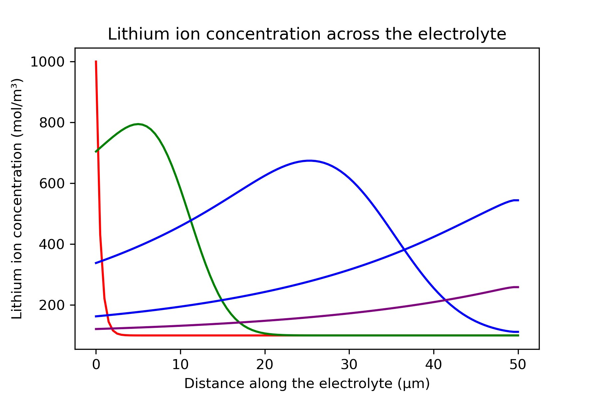

← Projects · $_ Code sheet · Second-year computing coursework, Imperial, 2024
Li-ion transport
PDE solver
Lithium-ion transport across a battery electrolyte during discharge, written as a 1D convection–diffusion equation and solved two ways: explicit FTCS and implicit Crank–Nicolson. Built as a team of two.
Domain
50 µm electrolyte
Equation
1D convection–diffusion
Schemes
FTCS, Crank–Nicolson
Language
Python
01Solution
02Model
∂c/∂t = D ∂²c/∂x² − μE ∂c/∂x
Diffusion spreads the ions out; the electric field drifts them from anode to cathode. The time scale comes from a phone battery discharging over five to six hours.
| Initial | Exponential profile in x |
| Anode | Dirichlet: concentration decaying exponentially in time |
| Cathode | Neumann: zero flux |
03Two schemes
| Scheme | Order in time | Stability | Cost per step |
|---|---|---|---|
| FTCS, explicit | First | Conditional: μEΔx/D ≤ 2 and DΔt/Δx² ≤ ½ | A direct update |
| Crank–Nicolson, implicit | Second | Unconditional for linear diffusion, with decaying oscillations at large steps | One linear solve |
FTCS is cheap per step, but the grid limits its time step. Crank–Nicolson allows larger, more accurate steps and needs a linear solve at each one.
04Profiles

05Stack
PythonNumPyMatplotlib
Team of two.